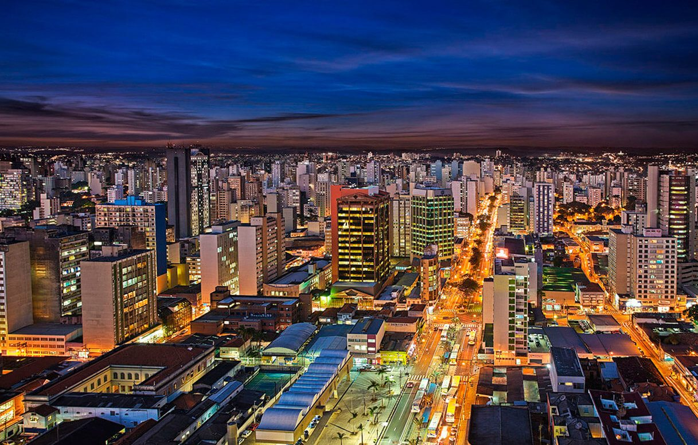

As 10 melhores cidades do estado de São Paulo!
Confira à seguir, imagens com as bélissimas cidades do nosso estado de São Paulo;
São Paulo

Guarulhos
Caraguatatuba

São Bernardo do Campo

Bauru
Jundiaí

Santo André

Sorocaba

Campinas

São José dos Campos